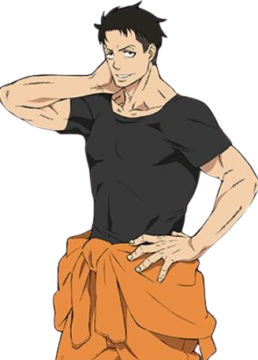
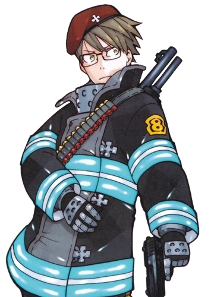
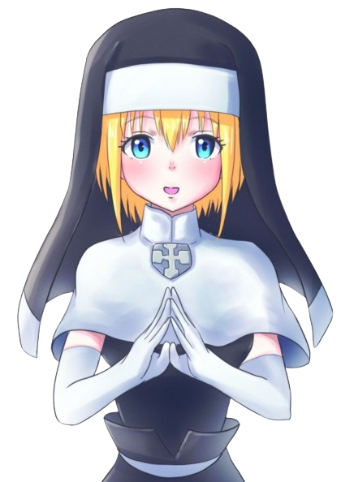
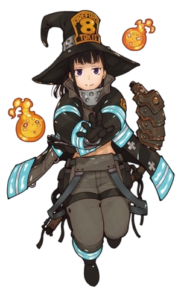
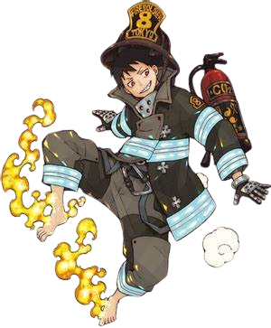
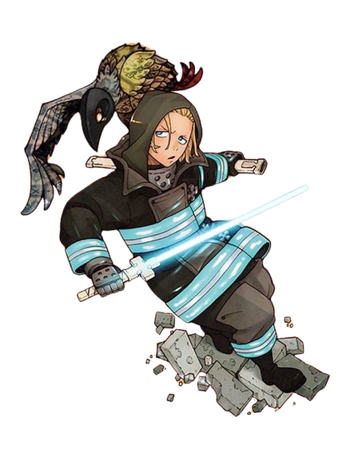

-
Akitaru Oubi
Descrição
Akitaru é um indivíduo corajoso, capaz de enfrentar Infernais e usuários de habilidades com coragem. Apesar de não ter uma habilidade de ignição e temer a morte, ele acredita que não pode se dar ao luxo de vacilar ou hesitar por causa de sua responsabilidade com seus companheiros de equipe. Akitaru acredita muito na justiça. Ele não tolera malfeitores e é obrigado a garantir que quem está causando problemas no mundo seja interrompido.
-
Takehisa Hinawa
Descrição
Takehisa é um bombeiro com habilidade de segunda geração, que despertou a capacidade de manipular chamas através do uso de armas de fogo, como uma metralhadora ou uma pistola, que ele empunha no campo de batalha. Além disso, a capacidade de Takehisa lhe permite controlar a pólvora dentro de balas, fazendo com que o impacto que elas tornam mais forte ou mais fraco, dependendo da situação.
-
Iris
Descrição
Iris é uma jovem de estatura média, com cabelos loiros curtos e olhos azuis. Ela usa um hábito, que consiste em uma túnica, coberta por um escapulário, e um véu, sandálias leves, luvas longas e leves, meias e um broche com um símbolo de cruz gravado nele. Sendo irmã, Iris tem uma forte crença na fé religiosa. Ela é muito cortês com os outros, mas é relativamente tímida. Iris é uma pessoa carinhosa e de bom coração, que deseja ajudar e dar apoio a todos os necessitados, apesar das circunstâncias em questão.
-
Maki Oze
Descrição
Maki é uma das personagens mais legais de Fire Force. Ela é uma mulher bem forte!!! Ela possui habilidades de segunda geração, tendo se adaptado à combustão humana espontânea, tornando-se capaz de controlar chamas de longa distância. Ao fazer isso, ela pode lidar com duas Terceiras Gerações simultaneamente, sendo capaz de extinguir e absorver suas chamas geradas em uma bola de fogo gigante. Aliás, as habilidades de Maki fornecem defesa para todo o seu time, pois ela pode refletir ataques de fogo recebidos e usar as chamas de um oponente contra eles. Embora ela seja incapaz de desviar ou redirecionar um incêndio com muita força, ela é capaz de alterar sua forma para reduzir seu impacto.
-
Shinra Kusakabe
Descrição
O protagonista é um bombeiro de segunda classe da terceira geração. Após a morte de sua mãe, e presumivelmente de seu irmão mais novo, Shinra entrou na 8ª Brigada Especial de Incêndio para atingir seu objetivo de se tornar um herói, salvando as pessoas do fenômeno da combustão humana e descobrindo a verdade após a morte de sua família.
-
Arthur Boyle
Descrição
Arthur é de Terceira Geração, ele é capaz de elevar a temperatura das chamas que cria, permitindo, assim, fabricar e controlar o quarto estado da matéria – o plasma. Usando esta espada de plasma, Arthur é capaz de cortar objetos com grande facilidade, pois tem os mesmos efeitos que o corte a plasma. Arthur usa Excalibur exclusivamente na mão direita. Excalibur mostrou a proficiência da capacidade de desviar e afastar as chamas. Com sua espada, Arthur é capaz de cortar facilmente metais e gerar eletricidade.